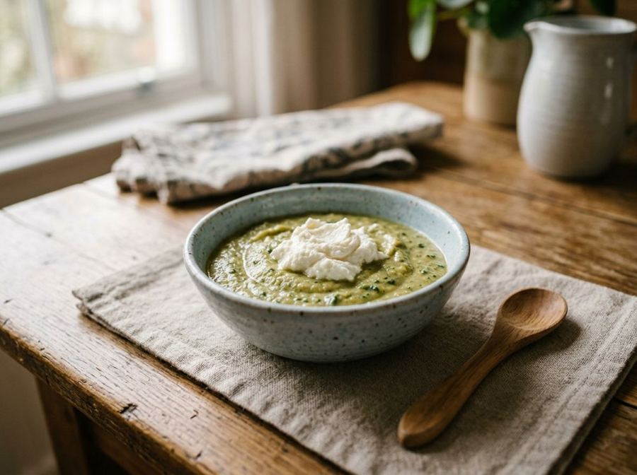

Ricotta and spinach baby food
Kid-friendlyCreamy baby food rich in calcium, from 8 months.
Ingredients
- Fresh spinach (cleaned)50 g
- Fresh cow's milk ricotta30 g
- Instant rice cream20 g
- Vegetable broth (salt-free)180 ml
- Extra virgin olive oil5 g
Allergens
Milk
May contain traces of: Celery.
Method
- Thoroughly wash the spinach leaves under running water and remove the tough stems.
- Steam the spinach for about 5-7 minutes until tender to preserve micronutrients.
- Drain the spinach well and blend with an immersion blender until a smooth puree is obtained.
- Heat the vegetable broth in a small saucepan to a temperature of about 60-70°C (avoid a rolling boil).
- Slowly whisk the rice cream into the hot broth, stirring vigorously to prevent lumps.
- Add the spinach puree to the rice cream and incorporate well.
- Soften the ricotta with a spoon to make it creamy, then fold it into the baby food, mixing gently.
- Finish with the raw extra virgin olive oil and check that the temperature is suitable for consumption (approx. 37°C).
Nutrition facts (estimate)
| Per serving (250 g) | Per 100 g | |
|---|---|---|
| Energy | 761 kJ / 182 kcal | 304 kJ / 73 kcal |
| Protein | 5.4 g | 2.2 g |
| Carbohydrates | 18 g | 7.4 g |
| of which sugars | 1.2 g | 0.5 g |
| Fat | 9.2 g | 3.7 g |
| of which saturates | 3.8 g | 1.5 g |
| Fibre | 1.8 g | 0.7 g |
| Salt | 0.1 g | 0.04 g |
AI estimates based on average CREA / USDA data: indicative only, not a substitute for medical or dietitian advice.
Open the recipe in the app for the shopping list, ingredient sheets and nearby shops.
Get it on Google Play